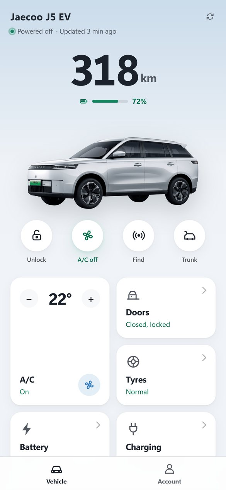
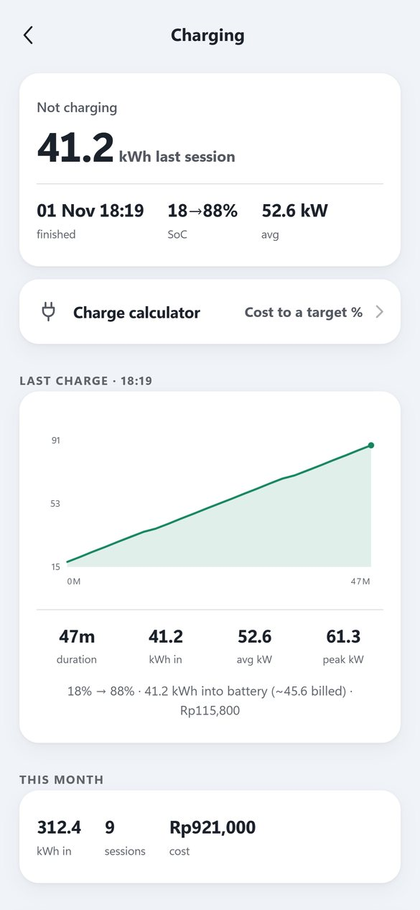
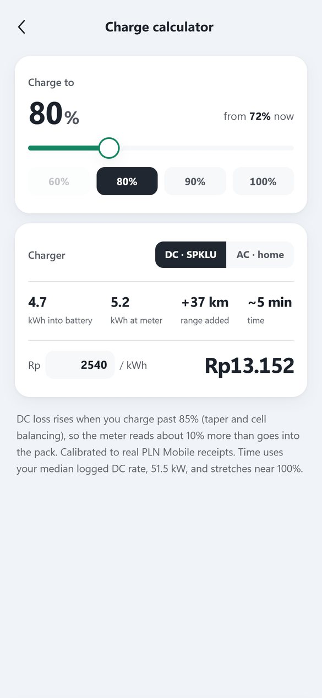

Dashboard CarLinko open source
Dashboard lengkap untuk Jaecoo, Omoda dan Chery kamu
Semua yang nggak ditunjukkan aplikasi CarLinko: trip, konsumsi energi, biaya charging, ban dan kontrol jarak jauh. Membaca akun CarLinko kamu sendiri dan menyimpan riwayat yang dibuang aplikasinya. Jalan di PC atau HP Android bekas.
- Jaecoo
- Omoda
- Chery
- Exeed
Gratis, lisensi MIT. Tidak berafiliasi dengan Jaecoo, Omoda, Chery atau CarLinko.


Yang nggak ditunjukkan aplikasi CarLinko
Aplikasinya cuma menunjukkan kondisi mobil saat ini. OpenLinko mencatat setiap update yang dikirim mobil ke cloud-nya, jadi angkanya terkumpul dari hari ke hari.
-
Konsumsi energi asli
kWh/100 km per hari, bersih setelah regen, di samping angka head unit dan rating WLTP.
-
Sesi charging dan biayanya
Tiap sesi lengkap dengan kWh masuk, kurva daya dan biaya. Di mobil referensi, biayanya cocok dengan struk PLN Mobile 99,6 sampai 99,9%.
-
Trip dan kalender berkendara
Jarak, energi dan biaya charging tiap hari, dengan trip yang dideteksi dari odometer.
-
Kontrol jarak jauh
Kunci, A/C dengan suhu, jendela, bagasi dan cari mobil, dikirim dengan cara yang sama seperti aplikasi resminya. Lewat cloud, tanpa Bluetooth.
-
Ban, aki 12 V dan baterai
Tekanan ban di mobil dengan TPMS langsung, tegangan aki 12 V, dan kebiasaan charging untuk baterai LFP.
-
Add-on head unit
Climate Gesture: atur kipas dan suhu dengan geser dua jari di layar J5. Dipasang dari dashboard.




Mobil yang didukung
Sudah dikonfirmasi pemiliknya di empat mobil, tiga merek dan empat negara. Struktur datanya identik di semuanya, jadi kelihatannya ini format platform CarLinko, bukan per model. Mobil Chery Group lain di aplikasi CarLinko kemungkinan besar jalan.
| Mobil | Jenis | Negara | Status |
|---|---|---|---|
| Jaecoo J5 EV | Listrik | Indonesia | Mobil referensi, lengkap |
| Omoda E5 | Listrik | Uruguay | Terkonfirmasi |
| Chery Tiggo 7 PHEV / Tiggo 7 CSH | Plug-in hybrid | Malaysia | Terkonfirmasi |
| Chery Tiggo 8 PHEV | Plug-in hybrid | Afrika Selatan | Terkonfirmasi |
| Jaecoo, Omoda, Chery atau Exeed lain di CarLinko | Apa saja | Mana saja | Kemungkinan jalan. Tambahkan mobilmu |
Jalan di perangkat yang sudah kamu punya
Butuh satu perangkat yang nyala terus untuk mencatat data mobil. HP kamu, Android atau iPhone, tinggal buka di browser dan bisa ditambahkan ke layar utama.
PC Windows
Download repo-nya, klik dua kali start.bat. Semua yang dibutuhkan dipasang otomatis lalu dashboard terbuka.
start.bat
HP Android bekas baru
Pasang Termux dan Termux:Boot dari F-Droid, biarkan HP dicolok charger. Nyala lagi sendiri setelah restart.
pkg install -y git git clone https://github.com/GodrezJr2/openlinko ~/openlinko bash ~/openlinko/tools/termux-setup.sh
Linux, Raspberry Pi atau VPS
Satu skrip memasang service-nya, plus Tailscale opsional supaya bisa dibuka dari mana saja tanpa dibuka ke internet.
git clone https://github.com/GodrezJr2/openlinko cd openlinko && ./tools/install.sh --tailscale
Docker dan Home Assistant (REST) ada di README.
Akunmu, perangkatmu
Nggak ada cloud OpenLinko. Dashboard login ke akun CarLinko kamu dari perangkat kamu sendiri dan datanya disimpan di situ.
- Password, token, VIN dan plat nomor disimpan di file lokal yang nggak pernah di-commit.
- Satu instalasi per pemilik. Bukan layanan hosting dan nggak pernah menyimpan akun orang lain.
- Percobaan login dibatasi, jadi password yang salah nggak membanjiri akunmu.
- CarLinko cuma izinkan satu sesi per akun, jadi akun kedua yang ditautkan ke mobil bikin aplikasi di HP tetap login.
Pertanyaan
Ada dashboard untuk Jaecoo J5 EV?
Ada. OpenLinko dibuat di Jaecoo J5 EV. Ia membaca data yang sama dengan aplikasi CarLinko lalu menyimpan riwayatnya: trip, konsumsi energi bersih setelah regen, sesi charging beserta biayanya, ban dan aki 12 V.
Bisa untuk Omoda, Chery Tiggo atau Exeed?
Sudah terbukti di Omoda E5, Chery Tiggo 7 PHEV dan Chery Tiggo 8 PHEV selain J5. Mobil Chery Group lain di aplikasi CarLinko kemungkinan besar jalan. Kalau mobilmu belum ada, dashboard punya halaman Report my car yang menyalin laporan tanpa data pribadi untuk issue Add my car.
Apakah ini aplikasi resmi CarLinko?
Bukan. Ini proyek open source independen, tidak berafiliasi dengan Jaecoo, Omoda, Chery atau CarLinko. Ia bicara ke cloud yang sama dengan aplikasi resmi, pakai login kamu sendiri.
Perlu server?
Perlu satu perangkat yang nyala terus: PC Windows, Raspberry Pi, VPS kecil, atau HP Android bekas yang dicolok charger. HP yang kamu bawa tinggal buka di browser.
Bisa di iPhone?
Bisa, sebagai layar untuk melihat: buka di Safari lalu tambahkan ke layar utama. iOS nggak bisa menjalankan bagian yang nyala terus, jadi itu jalan di PC, server atau HP Android bekas.
Bisa disambung ke Home Assistant?
Bisa, lewat REST API-nya. Ada juga integrasi Home Assistant terpisah untuk mobil CarLinko yang tercantum di README.
Bayar?
Gratis. Open source berlisensi MIT dan jalan di perangkat yang sudah kamu punya.